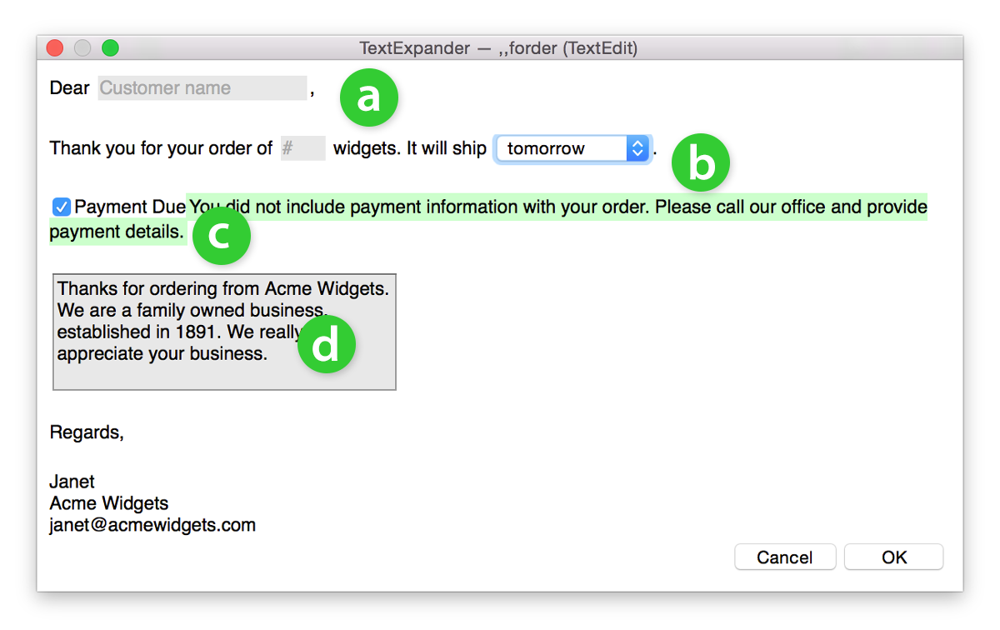
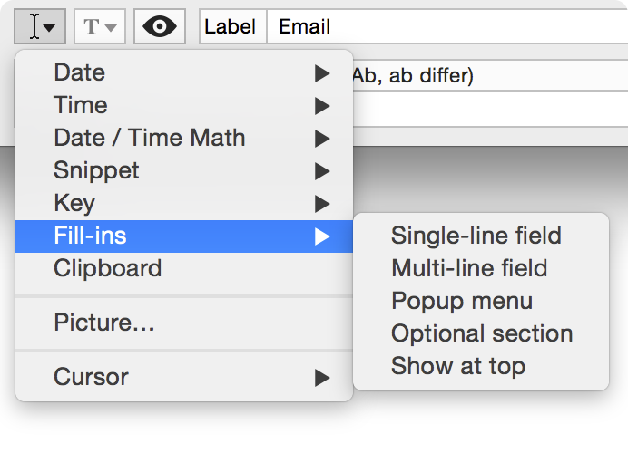
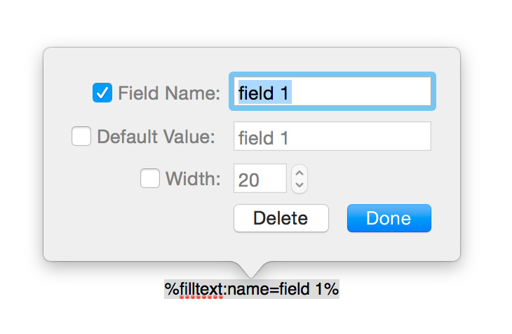

Help: Creating and Using Fill-In Fields
Introduction to Fill-in fields
You can add fill-in fields to a snippet to make it easy to create customized boilerplate text at the time you expand an abbreviation.
Here is an example of a snippet with fill-in fields in action:

TextExpander supports four kinds of fill-in fields, as seen above:
- Single line fields:
- Popup menus:
- Optional sections:
- Multi-line fields:
Type or copy / paste in a customer's name or numerical quantity.
Assign a few standard options, like “today”, “tomorrow”, “in two days.”
This content will always be the same, but does not have to appear every time.
Allows for multiple lines of text to appear.
Creating a Fill-in Snippet
- Create a new snippet by clicking New Snippet
 in the TextExpander menubar.
in the TextExpander menubar. - Click the Insert menu
 located just above the Abbreviation box.
located just above the Abbreviation box. - Go to the Fill-ins option and select one of the four types listed.
- You will notice a fifth option, “Show at top.” This will allow all the single-line and popup fields to appear at the top of the fill-in window, useful if you create a very long snippet with lots of fields.
- Select a Field Name. (If two different fill-in fields have the same Field Name, the same text will appear in both.)
- Click Done to close the popup window. To edit later, double-click on the field entry text to open the popup. (The field entry text is what will appear in your snippet content, it will look something like this: %filltext:name=field 1%.)


Popup Window
All of the fields are optional. The fill-in will work even if you don't change any of the defaults. Note: All fill-ins with the same Field Name will have the same value.
- Field Name:
- Default Value:
- Width:
A descriptive name helps you organize if you have several fields. For example: “name”, “date”, “quantity”, etc.
Choose what will appear if nothing is added at the time of expansion. If you prefer the field to remain blank if nothing else is added, uncheck this option.
The default width is 20, shown in the example snippet above for the “customer name” field. The quantity field in the example has a specified width of 4.
Features
- Access Fill-ins via the insert button beneath the Content box.
- Double-click within a field entry to edit in a popup window.
- Expand snippets when entering information into fill-in fields.
- Switch applications without dismissing the fill-in window.
- Text and popup fill-in fields support default values.
- “Show at top”: For longer snippets, set the single-line and popup fields to appear along at the top of the fill-in window to make filling out the fields easier. Turn on this feature in Preferences. This also works for longer script snippets.
Advanced: Fill-in Syntax
If you want to skip the Insert menu, you can find the syntax for each of the four types of fill-ins below.
- Single-line fields
- Multi-line fields
- Popup menus
- Optional sections
- Show at top
Syntax:
%filltext[:name=<field name>][:default=<default value>][:width=<width>]%
Field name, default value, and width are all optional. Default width is 20.
Example:
%filltext:name=quantity:default=1:width=4%
Syntax:
%fillarea[:name=<area name>][:default=<default value>][:width=<width>][:height=<height>]%
Area name, default value, width, and height are all optional. Default width is 30. Default height is 5.
Example:
%fillarea:name=custom:default=Thanks for ordering from Acme Widgets. We are a family owned business, established in 1891. We really appreciate your business.:width=40:height=4%
Syntax:
%fillpopup[:name=<popup name>]:[default=]<value>:[default=]<value>…%
Name is optional. At least one <value> should be specified. Multiple <value>s are encouraged. If no default is specified, the first <value> will be the default.
Example:
%fillpopup:name=ship timeframe:today:default=tomorrow:next week%
Syntax:
%fillpart[:name=<section name>]:[default=yes'no]%<content of optional section>%fillpartend%
Example:
%fillpart:name=Payment Due:default=yes%You did not include payment information with your order. Please call our office at 555-1212 to provide payment details.%fillpartend%
Name is optional. Default is optional: yes or no; if not specified, no is used. Content can contain other fill-ins.
Syntax:
%filltop%
Place this macro anywhere in the snippet content, including nested snippets, for it to have the effect of placing single-line and popup fields at the top of the fill-in window upon snippet expansion.
Notes
Fill-in field names and default values cannot contain % (percent sign) or : (colon).
If two fill-in fields in a snippet have the same name, their value will be synchronized when you expand the snippet.
For information on other macros used in TextExpander, see Date, Time, and Math Macros and Advanced Snippet Functions: Macros.
© SmileOnMyMac, LLC, dba Smile. All rights reserved.
TextExpander is a registered trademark, Smile and the Smile logo are trademarks of SmileOnMyMac, LLC, dba Smile.